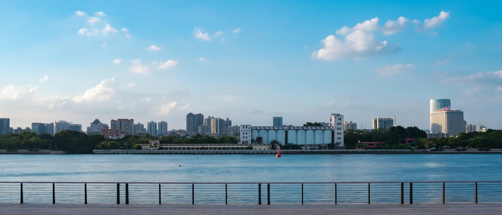
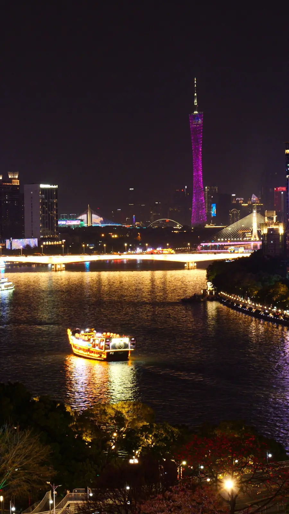
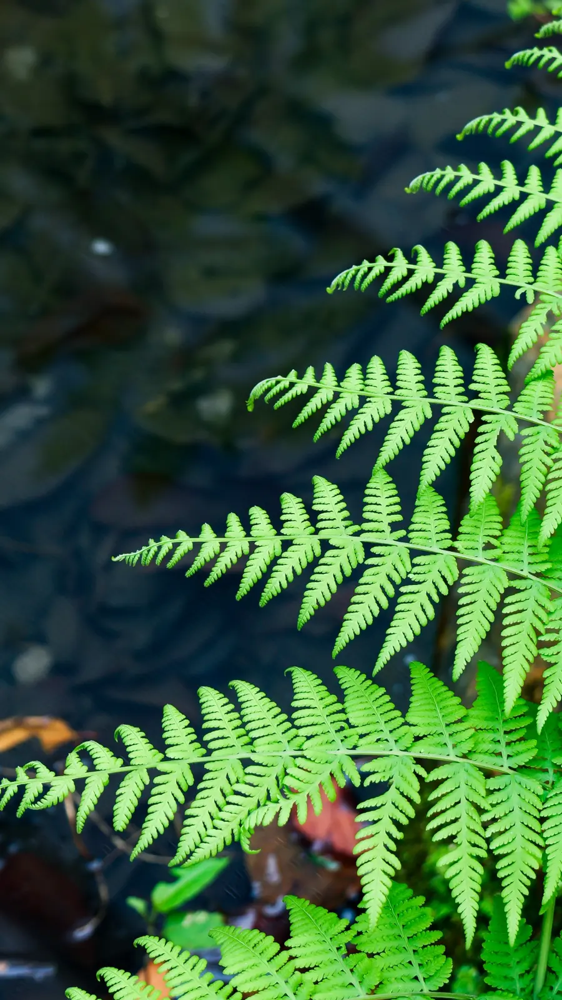
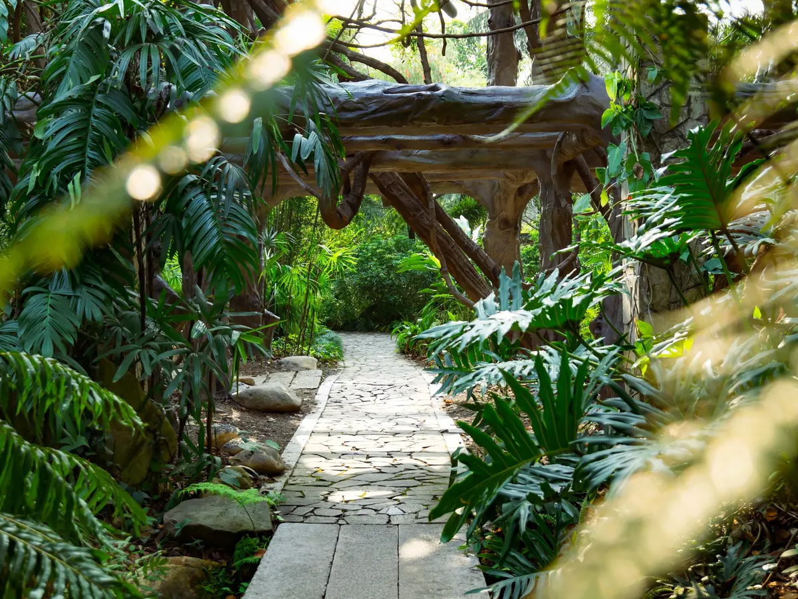

Steven Lee

PHOTOGRAPHY · VISUAL STORYTELLING
Quiet moments.
Strong images.
城市、光线、动物与建筑。把日常中值得被记住的瞬间，整理成属于自己的视觉档案。
Selected Works
以街头观察、城市夜景与建筑摄影为主，把不同时间和光线下的城市切片组合成一个完整作品集。

Night Walk
CITY · RIVER · LIGHTS
Architecture
HERITAGE · LIGHT · DETAILMore Stories
绿叶、树荫、人群和老建筑——这些并不是宏大的主题，但它们构成了城市最真实的气息。






ABOUT THE PHOTOGRAPHER
I photograph what deserves to be remembered — light, texture, atmosphere and the small moments between people and the city.
诗帝文，独立摄影师，专注于城市街拍、建筑与自然光影摄影。作品追求安静克制的美学，在日常场景中捕捉光与影的微妙平衡。
从夜幕下的城市灯火到午后斑驳的树影，从老建筑的肌理到街角的生命温度——每一帧画面都是一次凝视，一次与时间的对话。
现居广州，长期接受商业拍摄合作与个人约拍。

WeChat
扫码添加我的微信